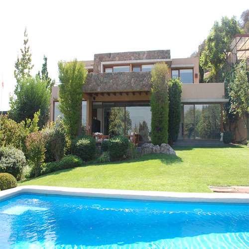
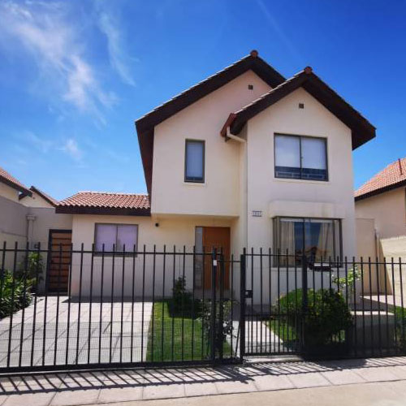
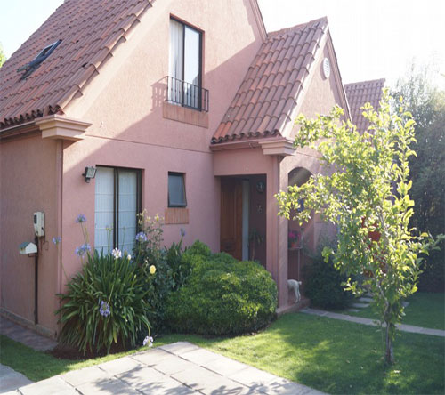
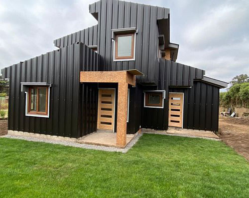

Somos una empresa dedicada a las ventas de propiedades, asesoramos ...
Listado de Propiedades

Casa de dos pisos, con patio trasero en Condominio Toromiro, en la V Región, ubicación privilegiada, en sus cercanías encontrarás restaurantes, supermercados, entre otros comercios y servicios que complementan el sector

Casa unifamiliar, desarrollada en dos niveles, se encuentra emplazada en Villa Portal del Inca V, en sector nor-poniente de la ciudad. Cercano al sector se encuentra equipamiento educacional, comercio minorista, equipamiento vecinal, entre
otros. Posee buena conectividad a través de Calle Maipú, la cual conecta con centro de la ciudad.

Casa de dos pisos, ubicada en condominio barrio nuevo de Nos. Cercano a locomoción colectiva, colegio, supermercado y comercio local.

Casa en "Condominio Los Alerces-Conjunto Ayres de Chicureo" ubicada en sector residencial de la comuna, propiedad cercana a supermercados, plaza de Armas de Colina, restaurantes, colegios, entre otros. Conectividad a Autopista Los Libertadores
y General San Martín.